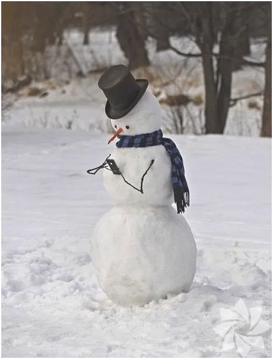
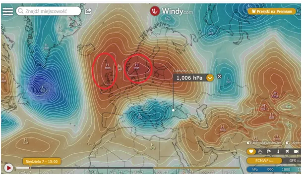
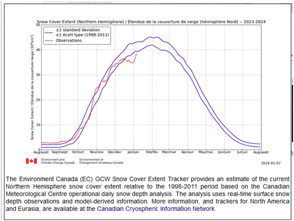
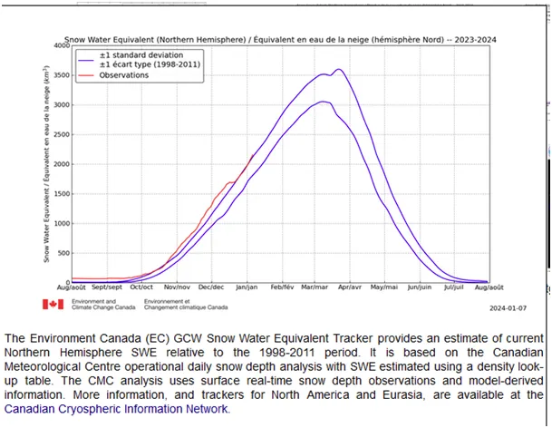
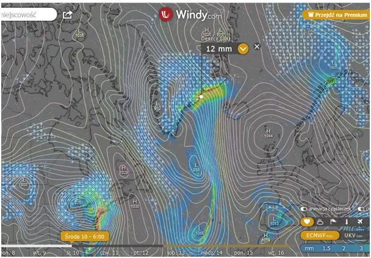

Byle do wiosny!
Wyż znad Atlantyku i drugi znad Skandynawii mają się ku sobie i lada moment stworzą jeden duży obszar wysokiego ciśnienia, co daje nam przynajmniej tydzień srogiej zimy. Nocne temperatury w Polsce spadną znacznie poniżej minus 10 st. C a na pogórzu bliżej minus 20 st. C.
Po silnych odwilżach w Azji i Ameryce Północnej, śniegu znów przybywa w tempie stachanowskim. Pierwszy wykres to obszar pod śniegiem na naszej półkuli, drugi to ilość wody uwięzionej w śniegu.

Na wykresach niebieskie linie to jedno odchylenie standardowe od stanów średnich. W praktyce oznacza to, że 68% zim w przeszłości mieściło się w tych granicach, a pozostałe 32% było poniżej lub powyżej, czyli +-16 % powyżej. Czyli średnio jedna zima na 6 lat jest powyżej tego niebieskiego przedziału "normalności".

O ile na wykresie pierwszym (obszar pod śniegiem ) po odwilżach wracamy do stanów średnich ze stanów niskich, to na wykresie drugim (ilość wody uwięzionej w śniegu), od początku sezonu idziemy na rekord.

Oznacza to de facto magazynowanie ciepła w lodzie, zamiast utraty go na zawsze w kosmicznej otchłani, paradoksalne to, ale prawdziwe. Tak duże ilości śniegu na przeciętym obszarze oznaczają dużą grubość pokrywy, co jak w sezonie poprzednim utrudni jego topnienie i wielkie obszary Arktyki pozbawi krótkiego arktycznego lata. Tak było rok temu po raz pierwszy od czasu prowadzenia obserwacji. Zimowy śnieg na wielkich obszarach przetrwał lato i we wrześniu został przysypany nowym, co de facto może być początkiem zlodowacenia nowych obszarów. Na ostatniej mapce widzimy skutki przekierowania ciepła atlantyckiego na Grenlandię.

Opady deszczu mogą stopić lód przybrzeżny, ale potężne ilości opadów zostają wyniesione 1000 metrów ponad poziom morza nad grenlandzki lądolód i tam w postaci śniegu opadną i pozostaną tam już na wieki. Grenlandzki lód rośnie, bo nie ma innego wyjścia, z powodu dużej wysokości nigdy tam nie ma odwilży. Jedyne straty mogą wystąpić tam w procesie sublimacji, czyli przechodzeniem kryształów lodu w stan gazowy pod wpływem promieniowania bez fazy ciekłej, proces ten jest jednak wolniejszy niż narastanie warstw śniegu, z czasem ściskanego w gęsty lód.
Paweł Klimczewski